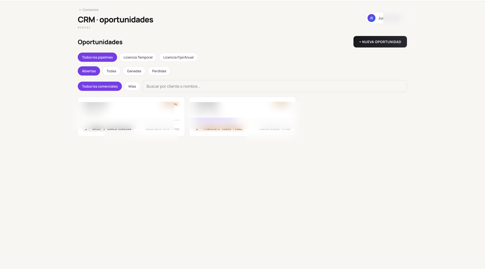
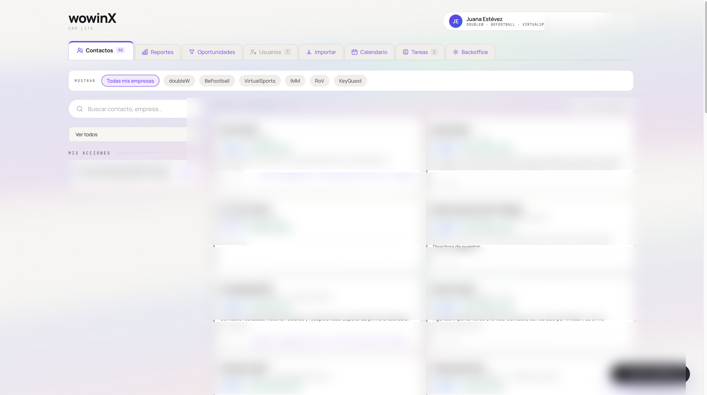
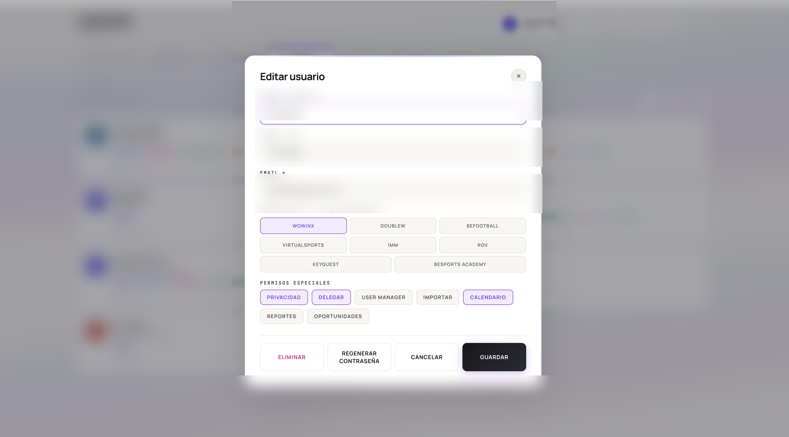
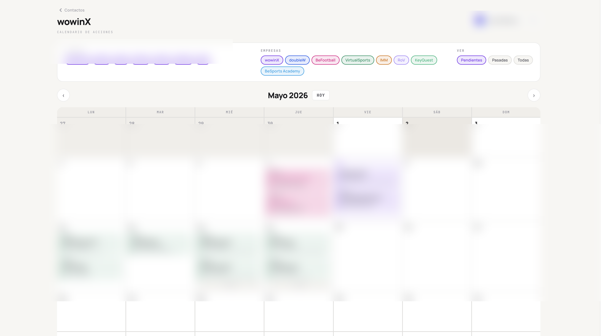
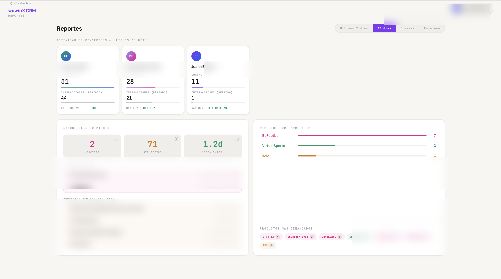

Un CRM con pipeline por cada IP,
no por cada vendedor.
wowinX gestiona varias líneas de producto y marca al mismo tiempo. Construimos un CRM ligero que estructura cada lead por la IP a la que pertenece, sin la fricción de Salesforce ni la rigidez de HubSpot.
Una organización con varias IPs no encaja en un pipeline plano.
Las suites tipo Salesforce o HubSpot están pensadas para una empresa con un único pipeline. Cuando una organización opera varias líneas de producto — IPs distintas con sus audiencias, sus equipos y su forma de cerrar — ese modelo se rompe: o duplicas la instancia, o lo metes todo en un único embudo y pierdes visibilidad de qué línea está funcionando.
wowinX necesitaba un CRM que entendiera su estructura desde el día uno: cada IP con su pipeline, sus contactos y sus reportes, pero compartiendo la base de usuarios y la lógica operativa. Y necesitaba implantarlo sin pagar por funciones que nunca iba a usar.
CRM en producción con cuatro módulos esenciales.
El producto está vivo y en uso real. Los equipos lo abren cada mañana. La discusión de diseño no fue qué funciones meter, sino cuáles dejar fuera para que el día a día no requiriese un manual.
- A Estructura por IP. Cada lead vive dentro del pipeline de su IP correspondiente. Cambiar de contexto es cambiar de vista, no de herramienta.
- B Pipeline configurable. Frío → caliente → ganado, con estados ajustables por línea. Cada IP define los suyos sin pedir al equipo técnico.
- C Contactos y usuarios. Segmentación por rol, asignación clara, sin duplicados aunque un mismo contacto aparezca en varias IPs.
- D Reportes operativos. Visibilidad de cierre por IP y por equipo. Métricas pensadas para reuniones de comité, no para vanity dashboards.





En uso real, cada día, sin manual.
El producto está en producción dentro de wowinX. La adopción no requirió formación formal — el equipo entendió el flujo en su primera sesión. Las iteraciones siguen la cadencia operativa: lo que falta se añade cuando frena al equipo, no cuando aparece en una hoja de ruta.
simultáneo
desde herramientas anteriores
del equipo
Stack ligero, despliegue seguro.
Hemos buscado tecnologías que permitan iterar rápido sin acumular deuda. Cada cambio importante pasa por una rama propia con base de datos espejo, se valida y se promociona. Es lo que nos permite tocar el producto en producción sin asustar al equipo que lo está usando esa misma tarde.
Te enseñamos el CRM en vivo.
La instancia productiva contiene datos confidenciales. Si te interesa ver el producto funcionando, organizamos una demo en directo sobre un entorno con datos sintéticos.